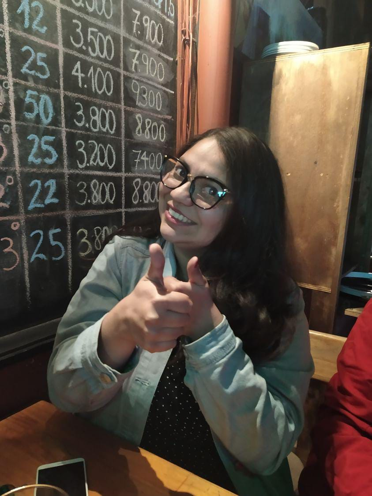

Valentina Elisa Aguilera

Información Personal
Estudiante de Informática con mención en ciberseguridad y con certificado en Soporte Informático. Poseo conocimientos sólidos en diagnóstico y resolución de problemas técnicos, así como en el manejo de herramientas y tecnologías relacionadas con el soporte IT. Me destaco por mi capacidad para aprender rápidamente, mi enfoque en la resolución de problemas y mi compromiso con la excelencia en el servicio. Actualmente, busco oportunidades para aplicar y expandir mis habilidades en un entorno profesional.
Datos de Contacto
- Correo electrónico: valentinaelisa2022@gmail.com
- Teléfono: +569 30379233
- GitHub: Perfil de GitHub
Educación
- Carrera: Técnico en Informática con mención en Ciberseguridad
- CFT Valparaiso
Habilidades técnicas:
- Diagnóstico y resolución de problemas técnicos.
- Configuración y mantenimiento de sistemas operativos (Windows, Linux, macOS).
- Instalación y configuración de hardware y software.
- Conocimientos básicos en redes (configuración de routers, resolución de problemas de conectividad)
Habilidades blandas:
- Comunicación efectiva y orientación al cliente.
- Resolución de problemas bajo presión.
- Organización y gestión del tiempo.
- Aprendizaje rápido y adaptación a nuevas tecnologías.
Proyectos
Consulta mi portafolio de proyectos